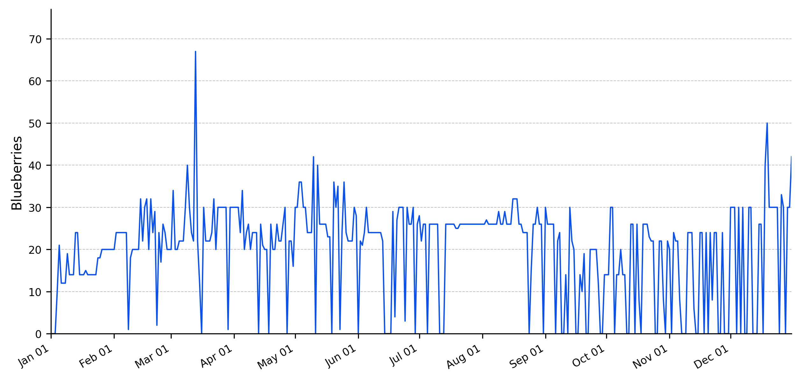
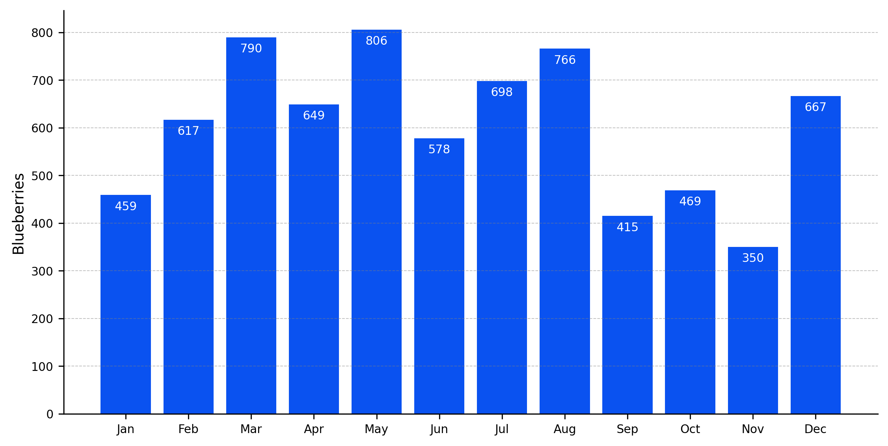
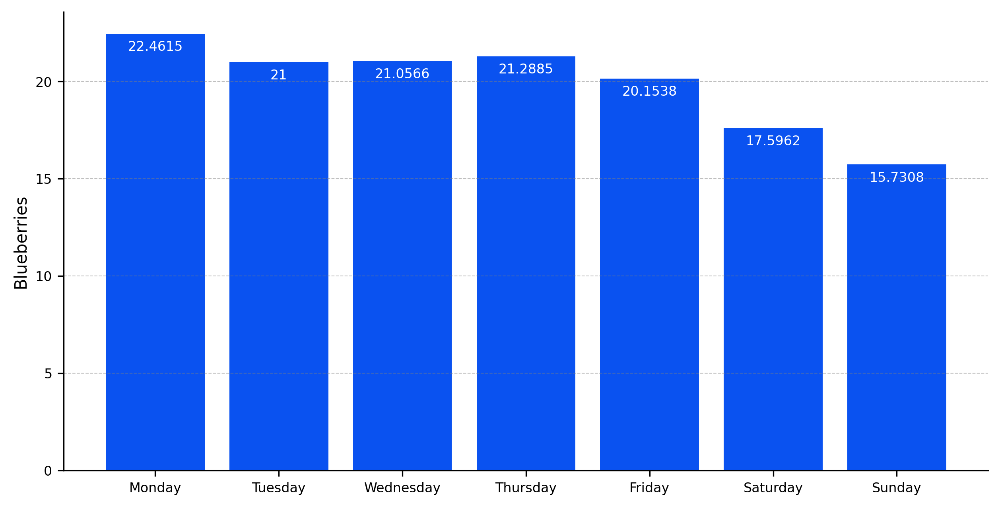
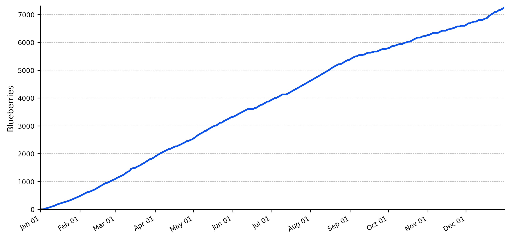
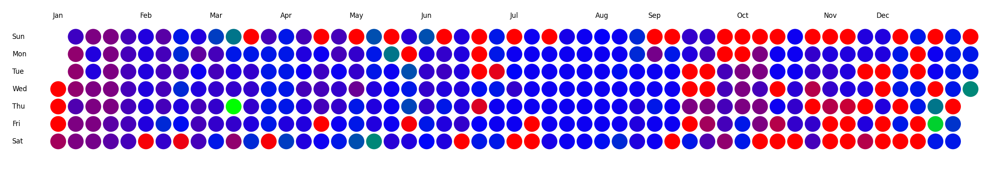

Oatmeal era begins
I quickly realized blueberries are an excellent addition to my daily oatmeal.
EXHIBIT 01 · BLUEBERRIES
The first of my MMMMM projects: blueberries. This year I decided to count every blueberry I ate for the whole year, then do a presentation on the statistics. I originally made a Prezi, but all of the statistics will be viewable on this page. But the Prezi is more dramatic in its storytelling.
01 · THE BACKSTORY
In late 2024, I started regularly eating oatmeal with blueberries in it.
In 2025, I decided to track every blueberry I ate that year.
I quickly realized blueberries are an excellent addition to my daily oatmeal.
Technically I decided to start counting on Jan 4, when I had my first blueberries of the year.
02 · THE FINE PRINT
Not every blueberry made the official tally. Only fresh blueberries that were easy to count were included.
Fresh blueberries that were easy to count.
Yes I regret not counting frozen blueberries. Just sometimes they get really stuck together so they're hard to count.
03 · THE BIG PICTURE
A year of counting, summed up in a few numbers.
I swear the 67 is just a coincidence. This actually predated the meme.
04 · EVERY LITTLE BERRY
The daily view plots dates across the year against the number of blueberries eaten.

Peak: 67 blueberries. I just happened to eat a blueberry-rich dinner that day in addition to my oatmeal with blueberries.
In July/August I very consistenly ate 26 per day
Rather than a New Year's kiss, I shotgunned 12 blueberries at 11:59pm on New Year's Eve.
05 · MONTHLY MOMENTUM
May was the berry-est month, while November was the quietest.

I attribute this big drop to blueberry season ending (So it is harder to find good ones) and just a loss of motivation.
06 · THE WEEKLY RHYTHM
On average, Mondays had the most blueberries and Sundays the fewest. It makes sense; I have a more consistent routine on weekdays.

07 · ADDING UP THE YEAR
The most useless chart on this page.

08 · THE BERRY MAP
The coolest chart on this page! Each dot represents a day of the year; the colors show how the daily counts varied. It goes from red (low blueberry count) -> blue (average blueberry count) -> green (high blueberry count)
Github repo for the code for how this chart and all the other charts were generated
09 · QUESTIONS FROM THE BERRY PUBLIC
For fun.
Blueberries are small so you eat a lot of them in one go. It's less funny to say I ate three hundred bananas in one year than seven thousand blueberries.
Also they are good for you and this encouraged me to eat more of them. They are a powerful antioxidant, whatever that means.
Not really. I think they are OK. Blueberry muffins are delicious though.
Absolutely not. I am free from this burden which I placed upon myself.
IDK, didn't count. Probably like 30.
I didn't count but I estimate $200-300. Some were organic and therefore more expensive, and a sadly large amount got tossed due to mold suspicions.
The best ones I had were more often organic than not, but your median organic/regular blueberry taste similar.
I tended to eat blueberries in even numbers because I counted in twos.
Yes. I had more than one instance where someone was kindly cooking me blueberry pancakes, and I had to request that they count the blueberries before putting them in the pancake. Weirdest accommodation I've ever had to ask for.
Also, fresh berries in the store get moldy very quickly. I had to really inspect the cartons to not get bad ones, especially in the off-season. Sadly there were a lot of blueberry purges where I had to toss suspicious berries.
Yes! I had some pink blueberries in Santa Barbara. They were good, kind of tasted like a blueberry and grape hybrid.
I actually concocted my oatmeal recipe for specific health benefits, mainly reducing cholesterol.
Thank you berry much for reading!